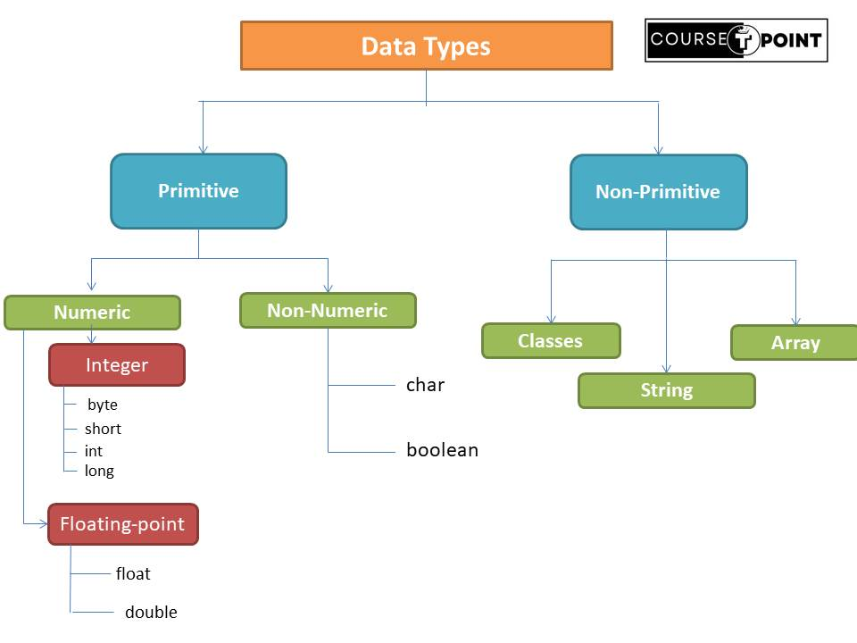

Array in Java
| Table Of Content | |
|---|---|
Introduction to Array
In Java, Array is collection of similar type of element that is stored into single varible at contiguous memory location. In simple array refers to group of contiguous or related data items that share a common name.
- In java array are dynamically allocated.
- A specific element in an array is accessed by its index.
- Array has consecutive memory location.
- In Java array is an object.
Types of Array
In Java Array are classified into two Types:
- One Dimentional Array
- Multidimentional Array
One Dimentional Array
A list of items can be given one variable name using only one subscript such a variable called single-subscripted variable or One Dimentional Array.
Syntax to declare an Array
data_type arr_name[];
Or
data_type[] arr_name;
Instantiating an Array in Java
int arr_name[] = new int[size];
Creating an array
Like any other variable, arrays must be declared and created in the computer memory before they used. Creating of an array involves three steps:
- Declaring the array
- creating memory location
- Putting values into memory location
class Array
{
public static void main(String[] args)
{
int arr[] = new int[5];
arr[0]=3;
arr[1]=2;
arr[2]=9;
arr[3]=8;
arr[4] = 12;
for (int i=0 ; i < 5 ; i++){
System.out.printf("arr [%d] = %d\n",i,arr[i]);
}
}
}
Output:
arr [0] = 3
arr [1] = 2
arr [2] = 9
arr [3] = 8
arr [4] = 12
Array Length
In Java, all arrays store the allocated size in a variable named length. We can obtain
the length of the above array arr.length.
This information will used to
manipulation of array where we not known the size of an array.
class Array
{
public static void main(String[] args)
{
int arr[] = new int[5];
arr[0]=3;
arr[1]=2;
arr[2]=9;
arr[3]=8;
arr[4] = 12;
for (int i=0 ; i < arr.length ; i++){
System.out.printf("arr [%d] = %d\n",i,arr[i]);
}
}
}
Output:
arr [0] = 3
arr [1] = 2
arr [2] = 9
arr [3] = 8
arr [4] = 12
Two Dimentional Array
As we know about single Dimentional array, array in the form of list that indexed from zero to its maximum size minus 1. Two Dimentional array is in the form of matrix the first index is selects as a row and the second index selects the column with that row as shown in figure.

Declare 2-D Array
data_type arr_name[][];
Or
data_type [][]arr_name;
class Array
{
public static void main(String[] args)
{
int arr[][] = {{0,1,2},{3,4,5},{6,7,8}};
for (int i=0 ; i < 3 ; i++){
for(int j =0; j < 3; j++ ){
System.out.print(arr[i][j] + " ");
}
System.out.println("");
}
}
}
Output:
0 1 2
3 4 5
6 7 8
DataTypes in Java
Every Variable in java has a Datatype. DataType is specify the size and value that can be stored in the variable. It should be an integer, boolean, character, floating point etc. Datatypes in java are catergories into two : Primitive(Build-in) and Non-Primitive(Derived/Reference Type).
- Primitive:In this datatype only capability to store single value in a varible,
their is
no special capability.
- Boolean DataType: Boolean type is used when we want to test a particular
condition during the execution of the program are only two values
true/falsethat a boolean type. - Byte DataType: The byte datatype is an 8-bit signed integer data type. It can store integer values ranging from -128 to 127.
- Short DataType: The short datatype is a 16-bit signed integer data type. It can store integer values ranging from -32,768 to 32,767
- Int DataType: It is a 32-bit signed integer datatype. It can store integer values ranging from -2,147,483,648 to 2,147,483,647. This datatype is commonly used for storing integer values in programs.
- Long DataType: It is a 64-bit signed integer datatype. It can store integer values ranging from -9,223,372,036,854,775,808 to 9,223,372,036,854,775,807. The long datatype is used when the range of values of int is not sufficient.
- Float DataType: : It is a 32-bit single-precision floating-point datatype. It can store decimal values and has a range of approximately ±3.4E38 with up to 7 significant digits.
- Double DataType: It is a 64-bit double-precision floating-point datatype. It can store decimal values and has a range of approximately ±1.7E308 with up to 15 significant digits. double provides higher precision compared to float.
- Char DataType: In Java, the char datatype is used to represent a single 16-bit(2 byte) Unicode character. It can store any character from the Unicode character set.
Syntax:
boolean < variale_name >Syntax:
byte < variale_name >Syntax:
short < variale_name >Syntax:
int < variale_name >Syntax:
long < variale_name >Syntax:
float < variale_name >Syntax:
double < variale_name >Syntax:
char < variale_name >Note: In Java Char take 2 byte because the char datatype is designed to represent Unicode characters. Compare to other languages like C/C++ use only ASCII characters, and to represent all ASCII characters in 8 bits is enough. But Java uses the Unicode system 8 bits is not enough to represent all characters so Java uses 2 bytes for characters
- Boolean DataType: Boolean type is used when we want to test a particular
condition during the execution of the program are only two values
- Non-Primitive DataType: In Non-primitive datatype has special capability to store
multiple value into a single variable that are called Non-primitive DataType.
- String: The String datatype is used to represent a sequence of characters. It's not a primitive datatype like int or char, but rather a class defined in the 'java.lang' package. Strings in Java are immutable, meaning their values cannot be changed once they are created.
- Class: User-defined types, they are blueprints for creating objects, and objects are instances of classes.
- Array: Array is a collection of similar datatype stored into one variable.
We dicuss string, array , interface and class in study in detail next caming topics.
| Type | Default value | Size | Range |
|---|---|---|---|
| boolean | false | 1bit (depend upon system) | true,false |
| byte | 0 | 8-bit | -128 to 127 |
| char | \u0000 | 16-bit | 0 to 255 |
| short | 0 | 16-bit | -32768 to 32767 |
| int | 0 | 32-bit | -2,147,483,648 to 2,147,483,647 |
| long | 0 | 64-bit | -9,223,372,036,854,775,808 to 9,223,036,854,775,807 |
| float | 0.0f | 32-bit | ±3.4E38 with up to 7 significant digits |
| double | 0.0d | 64-bit | ±1.7E308 with up to 15 significant digits |
public class Main {
public static void main(String[] args) {
// Primitive datatypes
int num1 = 10;
double num2 = 3.14d;
char letter = 'A';
boolean isTrue = true;
// Reference datatypes
String name = "John";
int[] numbers = {1, 2, 3, 4, 5};
}
}
Declaration of Variable
In Java, variables are the names of storage locations. After designing suitable variable names, we must declare them to the compiler.
- It tells the compiler what the variable name is.
- It specifies what type of data the variable name is.
- The place of declaration decides the scope of the variable.
A variable must be declared before it is used in the program.
datatype varName;
For ex: int count;
A simple method to giving the value or assign value to a varible. The Process of
giving initial value to variable is known as initialization.
int count = 0;
Scope of Variables
In Java, the scope of a variable defines where in the program the variable can be accessed or
referenced. The scope of a variable is determined by where it is declared within the code.
There
are Three types of varible are shown below:
- Local Variable
- Instance Variable
- Static Variable
Local Variable
- Local variables are declared within a method, constructor, or block.
- They exist only within the block in which they are declared and are accessible only from that block.
- They are not accessible from outside the block, including nested blocks within the same method.
Instance Variable
- Instance variables are declared within a class but outside any method, constructor, or block.
- These variables are created when an object of the class is created and destroyed when the object is destroyed.
- They are associated with objects (instances) of the class, hence the name "instance variables."
Static Variable
- It is similar to Instance variable but Static variables are declared using the static keyword within a class but outside any method, constructor, or block.
- They are shared among all instances of the class.
- They are associated with the class itself rather than with any specific instance of the class.
Program to demostrate the Local, Instance and static variable
public class Main {
static int y = 56;
public String name; // instance variable
public Main() {
this.name = "Rohit Varshney";
}
public static void main(String[] args) {
// initializing Instance Variable
Main obj = new Main();
System.out.println("Instance variable name = " + obj.name);
// Declare a Local variable
int x = 5;
System.out.println("local variable x = " + x);
if (x != 0) {
x = 7;
System.out.println("local variable x = " + x);
}
// no requirement to initializing a static Variable
System.out.println("Static variable y = " + y);
}
}
Output:
Instance variable name = Rohit Varshney
local variable x = 5
local variable x = 7
Static variable y = 56
Type Casting
In Java, TypeCasting is a process that convert one datatype to another using cast operator. We must cast the value to be stored by preceding it with the type name in parentheses.
Syntax : type var1 = (type) value;
Type of TypeCasting
- Widening TypeCasting: Widening TypeCasting also called Implicit TypeCasting. In
this type a lower datatype is transformed into higher datatype without cast
operators(automatically).
Syntax:< large_data_type > varname = < value_of_Small_datatype>. - Narrow TypeCasting: Narrowing TypeCasting also called Explicit TypeCasting. In this
type a higher datatype is transformed into lower datatype by using cast operators (manually).
Syntax:< smaller_data_type > varname = (< Small_data_type>) larger_data_type_varname.
byte -> short -> char -> int -> long -> float -> double
public class Main {
public static void main(String[] args) {
int var_int=5;
double var_double = var_int; //(automatic type conversion int to double)
System.out.println(var_int);
System.out.println(var_double);
}
}
Output:
5
5.0
double -> float -> long -> int -> char -> short -> byte
public class Main {
public static void main(String[] args) {
double a = 5.23654;
int b = (int)a; // manually(Explicit typecasting)
System.out.println(a);
System.out.println(b);
}
}
Output:
5.23654
5